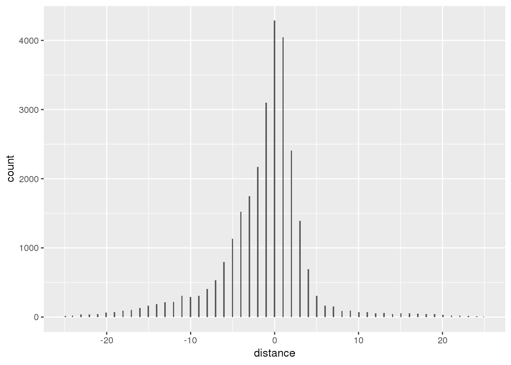
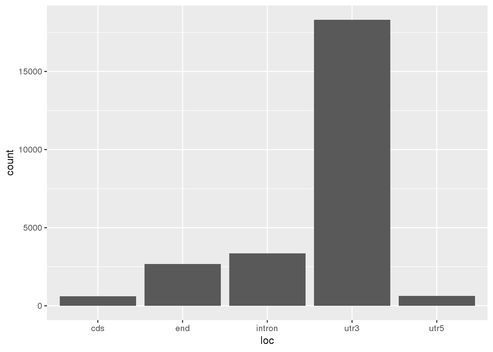
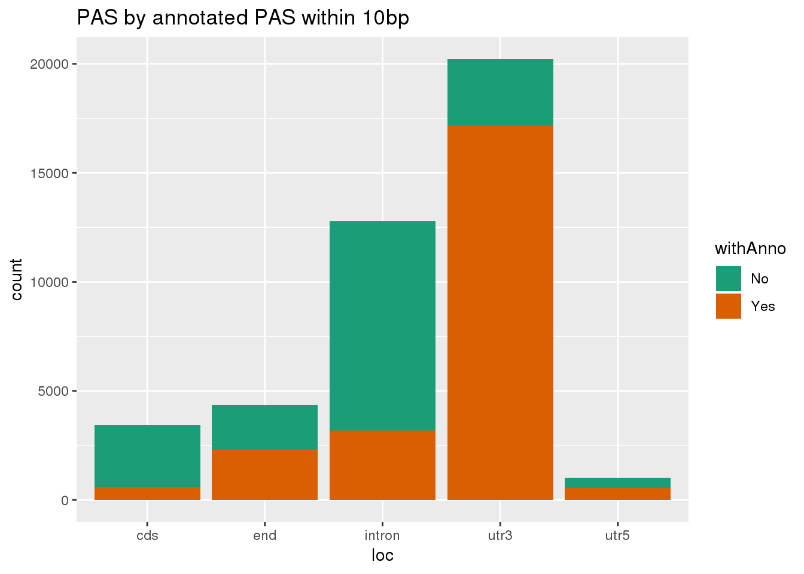
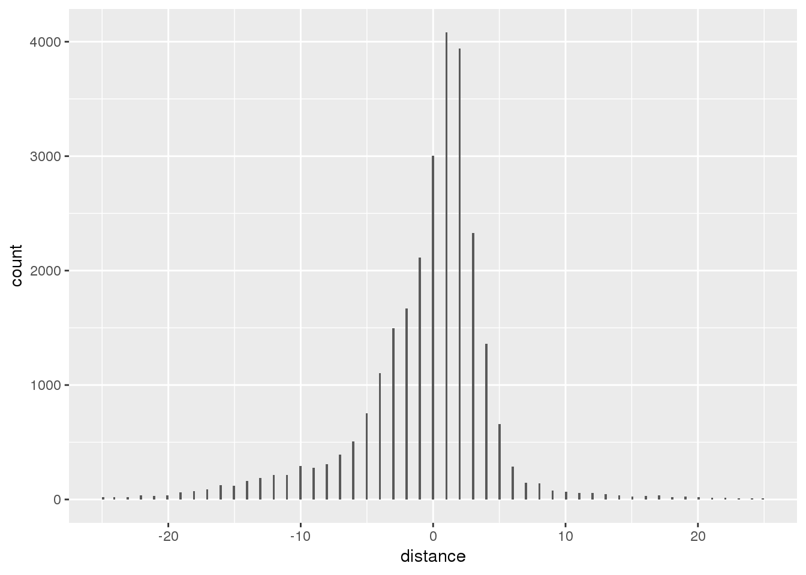
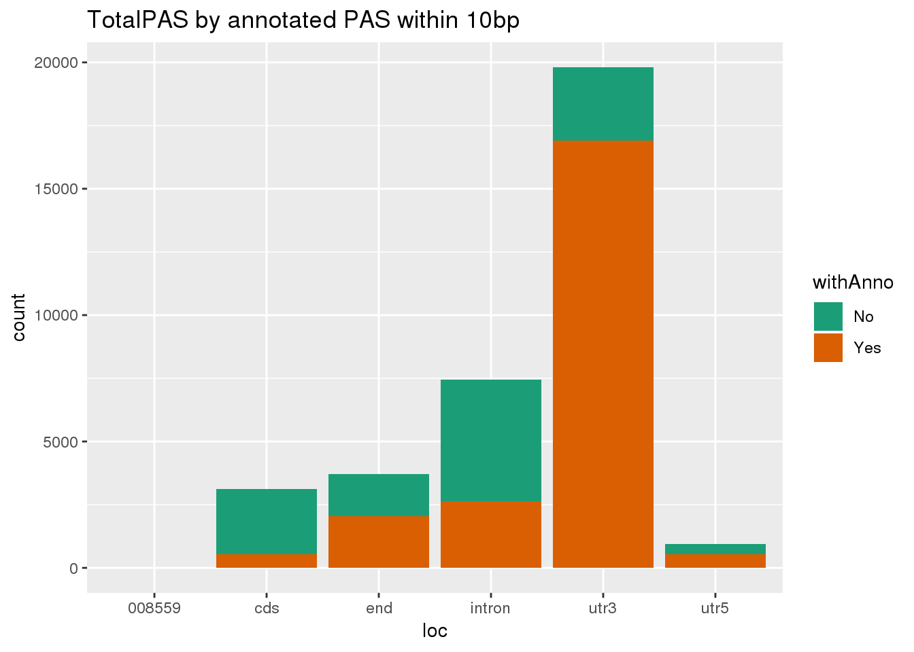
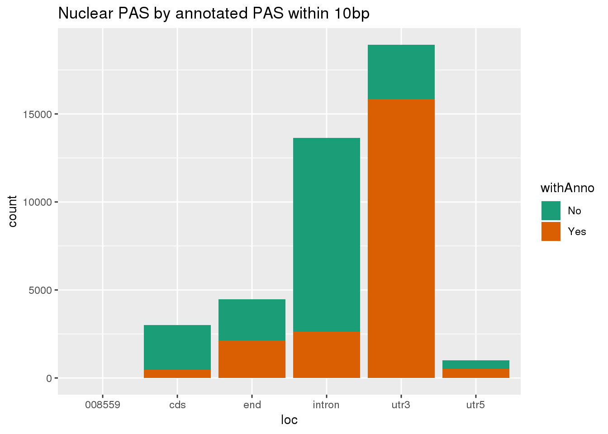
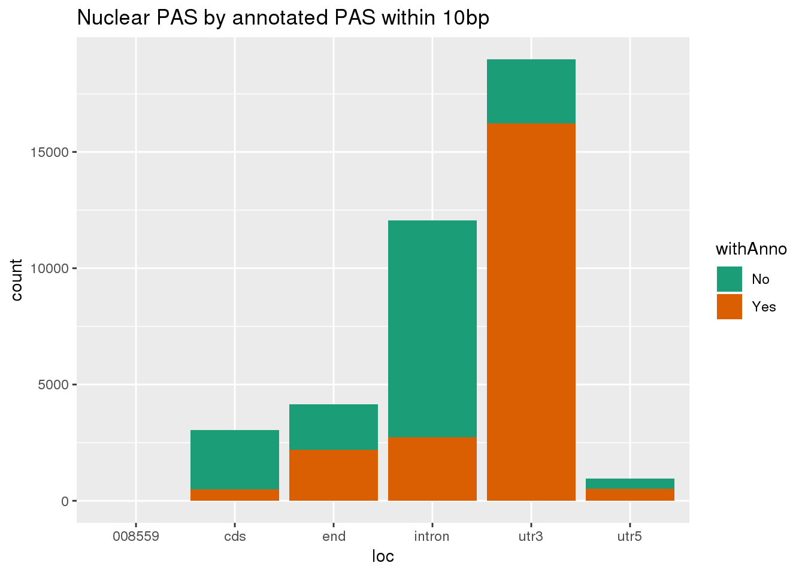
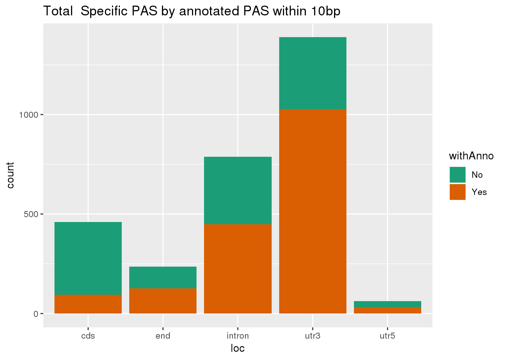

Last updated: 2019-07-16
Checks: 6 1
Knit directory: apaQTL/analysis/
This reproducible R Markdown analysis was created with workflowr (version 1.4.0). The Checks tab describes the reproducibility checks that were applied when the results were created. The Past versions tab lists the development history.
Great! Since the R Markdown file has been committed to the Git repository, you know the exact version of the code that produced these results.
The global environment had objects present when the code in the R Markdown file was run. These objects can affect the analysis in your R Markdown file in unknown ways. For reproduciblity it’s best to always run the code in an empty environment. Use wflow_publish or wflow_build to ensure that the code is always run in an empty environment.
The following objects were defined in the global environment when these results were created:
| Name | Class | Size |
|---|---|---|
| data | environment | 56 bytes |
| env | environment | 56 bytes |
The command set.seed(20190411) was run prior to running the code in the R Markdown file. Setting a seed ensures that any results that rely on randomness, e.g. subsampling or permutations, are reproducible.
Great job! Recording the operating system, R version, and package versions is critical for reproducibility.
Nice! There were no cached chunks for this analysis, so you can be confident that you successfully produced the results during this run.
Great job! Using relative paths to the files within your workflowr project makes it easier to run your code on other machines.
Great! You are using Git for version control. Tracking code development and connecting the code version to the results is critical for reproducibility. The version displayed above was the version of the Git repository at the time these results were generated.
Note that you need to be careful to ensure that all relevant files for the analysis have been committed to Git prior to generating the results (you can use wflow_publish or wflow_git_commit). workflowr only checks the R Markdown file, but you know if there are other scripts or data files that it depends on. Below is the status of the Git repository when the results were generated:
Ignored files:
Ignored: .DS_Store
Ignored: .Rhistory
Ignored: .Rproj.user/
Ignored: data/.DS_Store
Ignored: output/.DS_Store
Untracked files:
Untracked: .Rprofile
Untracked: ._.DS_Store
Untracked: .gitignore
Untracked: _workflowr.yml
Untracked: analysis/._PASdescriptiveplots.Rmd
Untracked: analysis/._cuttoffPercUsage.Rmd
Untracked: analysis/QTLexampleplots.Rmd
Untracked: analysis/cuttoffPercUsage.Rmd
Untracked: analysis/eQTLoverlap.Rmd
Untracked: analysis/gwasOverlap.Rmd
Untracked: analysis/mergeRNA.Rmd
Untracked: analysis/oldstuffNotNeeded.Rmd
Untracked: apaQTL.Rproj
Untracked: code/.NascentRNAdtPlotFirstintronicPAS.sh.swp
Untracked: code/._ApaQTL_nominalNonnorm.sh
Untracked: code/._BothFracDTPlotGeneRegions_normalized.sh
Untracked: code/._EandPqtl_perm.sh
Untracked: code/._EandPqtls.sh
Untracked: code/._FC_NucintornUpandDown.sh
Untracked: code/._FC_UTR.sh
Untracked: code/._FC_intornUpandDownsteamPAS.sh
Untracked: code/._FC_nascentseq.sh
Untracked: code/._FC_newPeaks_olddata.sh
Untracked: code/._HMMpermuteTotal.py
Untracked: code/._HmmPermute.py
Untracked: code/._IntronicPASDT.sh
Untracked: code/._LC_samplegroups.py
Untracked: code/._LD_qtl.sh
Untracked: code/._NascentRNAdtPlot.sh
Untracked: code/._NascentRNAdtPlot3UTRPAS.sh
Untracked: code/._NascentRNAdtPlotExcludeFirstintronicPAS.sh
Untracked: code/._NascentRNAdtPlotNucPAS.sh
Untracked: code/._NascentRNAdtPlotTotPAS.sh
Untracked: code/._NascentRNAdtPlotintronicPAS.sh
Untracked: code/._NascnetRNAdtPlotPAS.sh
Untracked: code/._NetSeq_fourthintronDT.sh
Untracked: code/._NomResfromPASSNP.py
Untracked: code/._NuclearPAS_5per.bed.py
Untracked: code/._PTTfacetboxplots.R
Untracked: code/._PrematureQTLNominal.sh
Untracked: code/._PrematureQTLPermuted.sh
Untracked: code/._QTL2bed.py
Untracked: code/._QTL2bed_withstrand.py
Untracked: code/._RNAbam2bw.sh
Untracked: code/._SnakefilePAS
Untracked: code/._SnakefilefiltPAS
Untracked: code/._TESplots100bp.sh
Untracked: code/._TESplots150bp.sh
Untracked: code/._TESplots200bp.sh
Untracked: code/._TotalPAS_5perc.bed.py
Untracked: code/._Untitled
Untracked: code/._ZipandTabPheno.sh
Untracked: code/._aAPAqtl_nominal39ind.sh
Untracked: code/._annotatePacBioPASregion.sh
Untracked: code/._annotatedPAS2bed.py
Untracked: code/._apaQTLCorrectPvalMakeQQ.R
Untracked: code/._apaQTL_Nominal.sh
Untracked: code/._apaQTL_permuted.sh
Untracked: code/._assignNucIntonpeak2intronlocs.sh
Untracked: code/._assignTotIntronpeak2intronlocs.sh
Untracked: code/._bam2BW_5primemost.sh
Untracked: code/._bed2saf.py
Untracked: code/._bothFracDTplot1stintron.sh
Untracked: code/._bothFracDTplot4thintron.sh
Untracked: code/._bothFrac_FC.sh
Untracked: code/._callPeaksYL.py
Untracked: code/._changenomQTLres2geneName.py
Untracked: code/._chooseAnno2PAS_pacbio.py
Untracked: code/._chooseAnno2SAF.py
Untracked: code/._chooseSignalSite
Untracked: code/._chooseSignalSite.py
Untracked: code/._closestannotated.sh
Untracked: code/._closestannotated_byfrac.sh
Untracked: code/._cluster.json
Untracked: code/._clusterPAS.json
Untracked: code/._clusterfiltPAS.json
Untracked: code/._codingdms2bed.py
Untracked: code/._config.yaml
Untracked: code/._config2.yaml
Untracked: code/._configOLD.yaml
Untracked: code/._convertNominal2SNPLOC.py
Untracked: code/._convertNumeric.py
Untracked: code/._correctNomeqtl.R
Untracked: code/._createPlinkSampfile.py
Untracked: code/._dag.pdf
Untracked: code/._eQTL_switch2snploc.py
Untracked: code/._eQTLgenestestedapa.py
Untracked: code/._encodeRNADTplots.sh
Untracked: code/._extractGenotypes.py
Untracked: code/._extractseqfromqtlfastq.py
Untracked: code/._fc2leafphen.py
Untracked: code/._filter5perc.R
Untracked: code/._filter5percPheno.py
Untracked: code/._filterpeaks.py
Untracked: code/._finalPASbed2SAF.py
Untracked: code/._fix4su304corr.py
Untracked: code/._fix4su604corr.py
Untracked: code/._fix4sukalisto.py
Untracked: code/._fixExandUnexeQTL
Untracked: code/._fixExandUnexeQTL.py
Untracked: code/._fixFChead.py
Untracked: code/._fixFChead_bothfrac.py
Untracked: code/._fixH3k12ac.py
Untracked: code/._fixPASregionSNPs.py
Untracked: code/._fixRNAhead4corr.py
Untracked: code/._fixRNAkalisto.py
Untracked: code/._fixgroupedtranscript.py
Untracked: code/._fixhead_netseqfc.py
Untracked: code/._getAPAfromanyeQTL.py
Untracked: code/._getApapval4eqtl.py
Untracked: code/._getApapval4eqtl_unexp.py
Untracked: code/._getDownstreamIntronNuclear.py
Untracked: code/._getIntronDownstreamPAS.py
Untracked: code/._getIntronUpstreamPAS.py
Untracked: code/._getQTLalleles.py
Untracked: code/._getQTLfastq.sh
Untracked: code/._getUpstreamIntronNuclear.py
Untracked: code/._grouptranscripts.py
Untracked: code/._intersectVCFandupPAS.sh
Untracked: code/._keep5perMAF.py
Untracked: code/._keepSNP_vcf.sh
Untracked: code/._make5percPeakbed.py
Untracked: code/._makeFileID.py
Untracked: code/._makePheno.py
Untracked: code/._makeSAFbothfrac5perc.py
Untracked: code/._makeSNP2rsidfile.py
Untracked: code/._makeeQTLempirical_unexp.py
Untracked: code/._makeeQTLempiricaldist.py
Untracked: code/._makegencondeTSSfile.py
Untracked: code/._mapSSsnps2PAS.sh
Untracked: code/._mergRNABam.sh
Untracked: code/._mergeAllBam.sh
Untracked: code/._mergeBW_norm.sh
Untracked: code/._mergeBamNascent.sh
Untracked: code/._mergeByFracBam.sh
Untracked: code/._mergePeaks.sh
Untracked: code/._mnase1stintron.sh
Untracked: code/._mnaseDT_fourthintron.sh
Untracked: code/._namePeaks.py
Untracked: code/._netseqDTplot1stIntron.sh
Untracked: code/._netseqFC.sh
Untracked: code/._nucQTLGWAS.py
Untracked: code/._nucSpeceffectsize.py
Untracked: code/._pacbioDT.sh
Untracked: code/._pacbioIntronicDT.sh
Untracked: code/._peak2PAS.py
Untracked: code/._peakFC.sh
Untracked: code/._pheno2countonly.R
Untracked: code/._phenoQTLfromlist.py
Untracked: code/._processYRIgen.py
Untracked: code/._pttQTLsinapaQTL.py
Untracked: code/._qtlRegionseq.sh
Untracked: code/._qtlsPvalOppFrac.py
Untracked: code/._quantassign2parsedpeak.py
Untracked: code/._removeXfromHmm.py
Untracked: code/._removeloc_pheno.py
Untracked: code/._runCorrectNomEqtl.sh
Untracked: code/._runHMMpermuteAPAqtls.sh
Untracked: code/._runHMMpermuteeQTLS.sh
Untracked: code/._runMakeEmpiricaleQTL_unexp.sh
Untracked: code/._runMakeeQTLempirical.sh
Untracked: code/._run_bam2bw_all3prime.sh
Untracked: code/._run_bam2bw_extra3.sh
Untracked: code/._run_getApaPval4eqtl.sh
Untracked: code/._run_getapafromeQTL.py
Untracked: code/._run_getapafromeQTL.sh
Untracked: code/._run_getapapval4eqtl_unexp.sh
Untracked: code/._run_leafcutterDiffIso.sh
Untracked: code/._run_pttfacetboxplot.sh
Untracked: code/._run_sepUsagephen.sh
Untracked: code/._run_sepgenobychrom.sh
Untracked: code/._selectNominalPvalues.py
Untracked: code/._sepUsagePhen.py
Untracked: code/._sepgenobychrom.py
Untracked: code/._snakemakePAS.batch
Untracked: code/._snakemakefiltPAS.batch
Untracked: code/._sortindexRNAbam.sh
Untracked: code/._submit-snakemakePAS.sh
Untracked: code/._submit-snakemakefiltPAS.sh
Untracked: code/._subsetAPAnotEorPgene.py
Untracked: code/._subsetApanoteGene.py
Untracked: code/._subsetUnexplainedeQTLs.py
Untracked: code/._subsetVCF_SS.sh
Untracked: code/._subsetVCF_noSSregions.sh
Untracked: code/._subsetVCF_upstreamPAS.sh
Untracked: code/._subset_diffisopheno.py
Untracked: code/._subsetpermAPAwithGenelist.py
Untracked: code/._subsetvcf_otherreg.sh
Untracked: code/._subsetvcf_permSS.sh
Untracked: code/._subtrachfiveprimeUTR.sh
Untracked: code/._subtractExons.sh
Untracked: code/._subtractfiveprimeUTR.sh
Untracked: code/._tabixSNPS.sh
Untracked: code/._totSeceffectsize.py
Untracked: code/._utrdms2saf.py
Untracked: code/._vcf2bed.py
Untracked: code/._writePTTexamplecode.py
Untracked: code/._writePTTexamplecode.sh
Untracked: code/.pversion
Untracked: code/.snakemake/
Untracked: code/APAqtl_nominal.err
Untracked: code/APAqtl_nominal.out
Untracked: code/APAqtl_nominal_39.err
Untracked: code/APAqtl_nominal_39.out
Untracked: code/APAqtl_nominal_nonNorm.err
Untracked: code/APAqtl_nominal_nonNorm.out
Untracked: code/APAqtl_permuted.err
Untracked: code/APAqtl_permuted.out
Untracked: code/ApaQTL_nominalNonnorm.sh
Untracked: code/BothFracDTPlot1stintron.err
Untracked: code/BothFracDTPlot1stintron.out
Untracked: code/BothFracDTPlot4stintron.err
Untracked: code/BothFracDTPlot4stintron.out
Untracked: code/BothFracDTPlotGeneRegions.err
Untracked: code/BothFracDTPlotGeneRegions.out
Untracked: code/BothFracDTPlotGeneRegions_norm.err
Untracked: code/BothFracDTPlotGeneRegions_norm.out
Untracked: code/BothFracDTPlotGeneRegions_normalized.sh
Untracked: code/DistPAS2Sig.py
Untracked: code/EandPqtl.err
Untracked: code/EandPqtl.out
Untracked: code/EandPqtl_perm.sh
Untracked: code/EandPqtls.sh
Untracked: code/EncodeRNADTPlotGeneRegions.err
Untracked: code/EncodeRNADTPlotGeneRegions.out
Untracked: code/FC_NucintornUpandDown.sh
Untracked: code/FC_NucintronPASupandDown.err
Untracked: code/FC_NucintronPASupandDown.out
Untracked: code/FC_UTR.err
Untracked: code/FC_UTR.out
Untracked: code/FC_UTR.sh
Untracked: code/FC_intornUpandDownsteamPAS.sh
Untracked: code/FC_intronPASupandDown.err
Untracked: code/FC_intronPASupandDown.out
Untracked: code/FC_nascent.err
Untracked: code/FC_nascentout
Untracked: code/FC_nascentseq.sh
Untracked: code/FC_newPAS_olddata.err
Untracked: code/FC_newPAS_olddata.out
Untracked: code/FC_newPeaks_olddata.sh
Untracked: code/HMMpermuteTotal.py
Untracked: code/HmmPermute.p
Untracked: code/HmmPermute.py
Untracked: code/IntronicPASDT.err
Untracked: code/IntronicPASDT.out
Untracked: code/IntronicPASDT.sh
Untracked: code/LC_samplegroups.py
Untracked: code/LD_qtl.sh
Untracked: code/LD_vcftools.hap.out
Untracked: code/NascentDTPlotGeneRegions.err
Untracked: code/NascentDTPlotGeneRegions.out
Untracked: code/NascentDTPlotPAS.err
Untracked: code/NascentDTPlotPAS.out
Untracked: code/NascentDTPlotPAS_3utr.err
Untracked: code/NascentDTPlotPAS_3utr.out
Untracked: code/NascentDTPlotPAS_firstintron.err
Untracked: code/NascentDTPlotPAS_firstintron.out
Untracked: code/NascentDTPlotPAS_intron.err
Untracked: code/NascentDTPlotPAS_intron.out
Untracked: code/NascentDTPlotPAS_nuc.err
Untracked: code/NascentDTPlotPAS_nuc.out
Untracked: code/NascentDTPlotPAS_tot.err
Untracked: code/NascentDTPlotPAS_tot.out
Untracked: code/NascentRNAdtPlot.sh
Untracked: code/NascentRNAdtPlot3UTRPAS.sh
Untracked: code/NascentRNAdtPlotExcludeFirstintronicPAS.sh
Untracked: code/NascentRNAdtPlotFirstintronicPAS.sh
Untracked: code/NascentRNAdtPlotNucPAS.sh
Untracked: code/NascentRNAdtPlotTotPAS.sh
Untracked: code/NascentRNAdtPlotintronicPAS.sh
Untracked: code/NascnetRNAdtPlotPAS.sh
Untracked: code/NetSeq_fourthintronDT.sh
Untracked: code/NomResfromPASSNP.py
Untracked: code/NuclearPAS_5per.bed.py
Untracked: code/Nuclear_example.err
Untracked: code/Nuclear_example.out
Untracked: code/PACbioDT.err
Untracked: code/PACbioDT.out
Untracked: code/PACbioDTitronic.err
Untracked: code/PACbioDTitronic.out
Untracked: code/PTTfacetboxplots.R
Untracked: code/PrematureQTLNominal.sh
Untracked: code/PrematureQTLPermuted.sh
Untracked: code/Prematureqtl_nominal.err
Untracked: code/Prematureqtl_nominal.out
Untracked: code/Prematureqtl_permuted.err
Untracked: code/Prematureqtl_permuted.out
Untracked: code/QTL2bed.py
Untracked: code/QTL2bed_withstrand.py
Untracked: code/README.md
Untracked: code/RNABam2BW.err
Untracked: code/RNABam2BW.out
Untracked: code/RNAbam2bw.sh
Untracked: code/Rplots.pdf
Untracked: code/Script4NuclearPTTqtlexamples.sh
Untracked: code/Script4NuclearQTLexamples.sh
Untracked: code/Script4TotalPTTqtlexamples.sh
Untracked: code/Script4TotalQTLexamples.sh
Untracked: code/TESplots100bp.err
Untracked: code/TESplots100bp.out
Untracked: code/TESplots100bp.sh
Untracked: code/TESplots150bp.err
Untracked: code/TESplots150bp.out
Untracked: code/TESplots150bp.sh
Untracked: code/TESplots200bp.err
Untracked: code/TESplots200bp.out
Untracked: code/TESplots200bp.sh
Untracked: code/TotalPAS_5perc.bed.py
Untracked: code/Total_example.err
Untracked: code/Total_example.out
Untracked: code/Untitled
Untracked: code/Upstream100Bases_general.py
Untracked: code/ZipandTabPheno.sh
Untracked: code/aAPAqtl_nominal39ind.sh
Untracked: code/annotatePacBioPASregion.sh
Untracked: code/annotatedPAS2bed.py
Untracked: code/annotatedPASregion.err
Untracked: code/annotatedPASregion.out
Untracked: code/apaQTLCorrectPvalMakeQQ_4pc.R
Untracked: code/apaQTL_Nominal_4pc.sh
Untracked: code/apaQTL_permuted.4pc.sh
Untracked: code/apafacetboxplots.R
Untracked: code/apaqtlfacetboxplots.R
Untracked: code/assignNucIntonpeak2intronlocs.sh
Untracked: code/assignPeak2Intronicregion.err
Untracked: code/assignPeak2Intronicregion.out
Untracked: code/assignTotIntronpeak2intronlocs.sh
Untracked: code/assigntotPeak2Intronicregion.err
Untracked: code/assigntotPeak2Intronicregion.out
Untracked: code/bam2BW_5primemost.sh
Untracked: code/bam2bw.err
Untracked: code/bam2bw.out
Untracked: code/bam2bw_5primemost.err
Untracked: code/bam2bw_5primemost.out
Untracked: code/binary_fileset.log
Untracked: code/bothFracDTplot1stintron.sh
Untracked: code/bothFracDTplot4thintron.sh
Untracked: code/bothFrac_FC.err
Untracked: code/bothFrac_FC.out
Untracked: code/bothFrac_FC.sh
Untracked: code/changePermQTLres2geneName.py
Untracked: code/changenomQTLres2geneName.py
Untracked: code/chooseAnno2PAS_pacbio.py
Untracked: code/closestannotated.err
Untracked: code/closestannotated.out
Untracked: code/closestannotated.sh
Untracked: code/closestannotated_byfrac.sh
Untracked: code/closestannotatedbyfrac.err
Untracked: code/closestannotatedbyfrac.out
Untracked: code/codingdms2bed.py
Untracked: code/convertNominal2SNPLOC.py
Untracked: code/correctNomeqtl.R
Untracked: code/createPlinkSampfile.py
Untracked: code/dag.pdf
Untracked: code/dagPAS.pdf
Untracked: code/dagfiltPAS.pdf
Untracked: code/eQTL_switch2snploc.py
Untracked: code/eQTLgenestestedapa.py
Untracked: code/encodeRNADTplots.sh
Untracked: code/extractGenotypes.py
Untracked: code/extractseqfromqtlfastq.py
Untracked: code/fc2leafphen.py
Untracked: code/finalPASbed2SAF.py
Untracked: code/findbuginpeaks.R
Untracked: code/fix4su304corr.py
Untracked: code/fix4su604corr.py
Untracked: code/fix4sukalisto.py
Untracked: code/fixExandUnexeQTL
Untracked: code/fixExandUnexeQTL.py
Untracked: code/fixFChead_bothfrac.py
Untracked: code/fixFChead_summary.py
Untracked: code/fixH3k12ac.py
Untracked: code/fixPASregionSNPs.py
Untracked: code/fixRNAhead4corr.py
Untracked: code/fixRNAkalisto.py
Untracked: code/fixgroupedtranscript.py
Untracked: code/fixhead_netseqfc.py
Untracked: code/genotypesYRI.gen.proc.keep.vcf.log
Untracked: code/genotypesYRI.gen.proc.keep.vcf.recode.vcf
Untracked: code/get100upPAS.py
Untracked: code/getAPAfromanyeQTL.py
Untracked: code/getApapval4eqtl.py
Untracked: code/getApapval4eqtl_unexp.py
Untracked: code/getDownstreamIntronNuclear.py
Untracked: code/getIntronDownstreamPAS.py
Untracked: code/getIntronUpstreamPAS.py
Untracked: code/getQTLalleles.py
Untracked: code/getQTLfastq.sh
Untracked: code/getSeq100up.sh
Untracked: code/getUpstreamIntronNuclear.py
Untracked: code/getseq100up.err
Untracked: code/getseq100up.out
Untracked: code/grouptranscripts.err
Untracked: code/grouptranscripts.out
Untracked: code/grouptranscripts.py
Untracked: code/intersectPAS_ssSNPS.err
Untracked: code/intersectPAS_ssSNPS.out
Untracked: code/intersectVCFPAS.err
Untracked: code/intersectVCFPAS.out
Untracked: code/intersectVCFandupPAS.sh
Untracked: code/keep5perMAF.py
Untracked: code/keepSNP_vcf.sh
Untracked: code/log/
Untracked: code/makeSAFbothfrac5perc.py
Untracked: code/makeSNP2rsidfile.py
Untracked: code/makeeQTLempirical_unexp.py
Untracked: code/makeeQTLempiricaldist.py
Untracked: code/makegencondeTSSfile.py
Untracked: code/mapSSsnps2PAS.sh
Untracked: code/mergRNABam.sh
Untracked: code/mergeBW_norm.sh
Untracked: code/mergeBWnorm.err
Untracked: code/mergeBWnorm.out
Untracked: code/mergeBamNacent.err
Untracked: code/mergeBamNacent.out
Untracked: code/mergeBamNascent.sh
Untracked: code/mergeRNAbam.err
Untracked: code/mergeRNAbam.out
Untracked: code/mnase1stintron.sh
Untracked: code/mnaseDTPlot1stintron.err
Untracked: code/mnaseDTPlot1stintron.out
Untracked: code/mnaseDTPlot4thintron.err
Untracked: code/mnaseDTPlot4thintron.out
Untracked: code/mnaseDT_fourthintron.sh
Untracked: code/netDTPlot4thintron.out
Untracked: code/netseqDTplot1stIntron.sh
Untracked: code/netseqFC.err
Untracked: code/netseqFC.out
Untracked: code/netseqFC.sh
Untracked: code/neyDTPlot4thintron.err
Untracked: code/nucQTLGWAS.py
Untracked: code/nucSpeceffectsize.py
Untracked: code/pacbioDT.sh
Untracked: code/pacbioIntronicDT.sh
Untracked: code/phenoQTLfromlist.py
Untracked: code/plink.log
Untracked: code/processYRIgen.py
Untracked: code/pttFacetBoxplots.err
Untracked: code/pttFacetBoxplots.out
Untracked: code/pttQTLsinapaQTL.py
Untracked: code/pullTwoMechData.py
Untracked: code/qtlFacetBoxplots.err
Untracked: code/qtlFacetBoxplots.out
Untracked: code/qtlRegionseq.sh
Untracked: code/qtlsPvalOppFrac.py
Untracked: code/rLD_vcftools.hap.err
Untracked: code/removeXfromHmm.py
Untracked: code/removeloc_pheno.py
Untracked: code/runCorrectNomEqtl.sh
Untracked: code/runCorrectNomeqtl.err
Untracked: code/runCorrectNomeqtl.out
Untracked: code/runHMMpermute.err
Untracked: code/runHMMpermute.out
Untracked: code/runHMMpermuteAPAqtls.sh
Untracked: code/runHMMpermuteeQTLS.sh
Untracked: code/runHMMpermuteeQTLs.err
Untracked: code/runHMMpermuteeQTLs.out
Untracked: code/runMakeEmpiricaleQTL_unexp.sh
Untracked: code/runMakeEmpiricaleQTLs.err
Untracked: code/runMakeEmpiricaleQTLs.out
Untracked: code/runMakeEmpiricaleQTLsunex.err
Untracked: code/runMakeEmpiricaleQTLsunex.out
Untracked: code/runMakeeQTLempirical.sh
Untracked: code/run_DistPAS2Sig.err
Untracked: code/run_DistPAS2Sig.out
Untracked: code/run_bam2bw.err
Untracked: code/run_bam2bw.out
Untracked: code/run_bam2bw_all3prime.sh
Untracked: code/run_bam2bw_extra3.sh
Untracked: code/run_bam2bwexta.err
Untracked: code/run_bam2bwexta.out
Untracked: code/run_distPAS2Sig.sh
Untracked: code/run_getAPAfromanyeQTL.err
Untracked: code/run_getAPAfromanyeQTL.out
Untracked: code/run_getApaPval4eQTLs.err
Untracked: code/run_getApaPval4eQTLs.out
Untracked: code/run_getApaPval4eQTLsunexplained.err
Untracked: code/run_getApaPval4eQTLsunexplained.out
Untracked: code/run_getApaPval4eqtl.sh
Untracked: code/run_getapafromeQTL.sh
Untracked: code/run_getapapval4eqtl_unexp.sh
Untracked: code/run_leafcutterDiffIso.sh
Untracked: code/run_leafcutter_ds.err
Untracked: code/run_leafcutter_ds.out
Untracked: code/run_pttfacetboxplot.sh
Untracked: code/run_qtlFacetBoxplots.sh
Untracked: code/run_sepUsagephen.sh
Untracked: code/run_sepgenobychrom.err
Untracked: code/run_sepgenobychrom.out
Untracked: code/run_sepgenobychrom.sh
Untracked: code/run_sepusage.err
Untracked: code/run_sepusage.out
Untracked: code/selectNominalPvalues.py
Untracked: code/sepUsagePhen.py
Untracked: code/sepgenobychrom.py
Untracked: code/seqQTLfastq.err
Untracked: code/seqQTLfastq.out
Untracked: code/seqQTLregion.err
Untracked: code/seqQTLregion.out
Untracked: code/snakePASlog.out
Untracked: code/snakefiltPASlog.out
Untracked: code/sortindexRNABam.err
Untracked: code/sortindexRNABam.out
Untracked: code/sortindexRNAbam.sh
Untracked: code/subsetAPAnotEorPgene.py
Untracked: code/subsetApanoteGene.py
Untracked: code/subsetUnexplainedeQTLs.py
Untracked: code/subsetVCF_SS.sh
Untracked: code/subsetVCF_noSSregions.sh
Untracked: code/subsetVCF_upstreamPAS.sh
Untracked: code/subset_diffisopheno.py
Untracked: code/subsetpermAPAwithGenelist.py
Untracked: code/subsetvcf_SS.err
Untracked: code/subsetvcf_SS.out
Untracked: code/subsetvcf_noSS.err
Untracked: code/subsetvcf_noSS.out
Untracked: code/subsetvcf_otherreg.sh
Untracked: code/subsetvcf_pas.err
Untracked: code/subsetvcf_pas.out
Untracked: code/subsetvcf_perm.err
Untracked: code/subsetvcf_perm.out
Untracked: code/subsetvcf_permSS.sh
Untracked: code/subsetvcf_rand.err
Untracked: code/subsetvcf_rand.out
Untracked: code/subtract5UTR.err
Untracked: code/subtract5UTR.out
Untracked: code/subtractExons.err
Untracked: code/subtractExons.out
Untracked: code/subtractExons.sh
Untracked: code/subtractfiveprimeUTR.sh
Untracked: code/tabixSNPS.sh
Untracked: code/tabixSNPs.err
Untracked: code/tabixSNPs.out
Untracked: code/totSeceffectsize.py
Untracked: code/transcriptdm2bed.py
Untracked: code/utrdms2saf.py
Untracked: code/vcf2bed.py
Untracked: code/vcf_keepsnps.err
Untracked: code/vcf_keepsnps.out
Untracked: code/writeExampleQTLcode.py
Untracked: code/writePTTexamplecode.py
Untracked: code/zipandtabPhen.err
Untracked: code/zipandtabPhen.out
Untracked: data/._.DS_Store
Untracked: data/._MetaDataSequencing.txt
Untracked: data/AnnotatedPAS/
Untracked: data/ApaByEgene/
Untracked: data/ApaByPgene/
Untracked: data/Battle_pQTL/
Untracked: data/CompareOldandNew/
Untracked: data/DTmatrix/
Untracked: data/DiffIso/
Untracked: data/EncodeRNA/
Untracked: data/ExampleQTLPlots/
Untracked: data/GWAS_overlap/
Untracked: data/GeuvadisRNA/
Untracked: data/HMMqtls/
Untracked: data/Li_eQTLs/
Untracked: data/NascentRNA/
Untracked: data/NucSpeceQTLeffect/
Untracked: data/PAS/
Untracked: data/PolyA_DB/
Untracked: data/PreTerm_pheno/
Untracked: data/PrematureQTLNominal/
Untracked: data/PrematureQTLPermuted/
Untracked: data/QTLGenotypes/
Untracked: data/QTLoverlap/
Untracked: data/QTLoverlap_nonNorm/
Untracked: data/README.md
Untracked: data/RNAseq/
Untracked: data/Reads2UTR/
Untracked: data/SNPinSS/
Untracked: data/SignalSiteFiles/
Untracked: data/TF_motifdisruption/
Untracked: data/ThirtyNineIndQtl_nominal/
Untracked: data/apaQTLNominal/
Untracked: data/apaQTLNominal_4pc/
Untracked: data/apaQTLPermuted/
Untracked: data/apaQTLPermuted_4pc/
Untracked: data/apaQTLs/
Untracked: data/assignedPeaks/
Untracked: data/bam/
Untracked: data/bam_clean/
Untracked: data/bam_waspfilt/
Untracked: data/bed_10up/
Untracked: data/bed_clean/
Untracked: data/bed_clean_sort/
Untracked: data/bed_waspfilter/
Untracked: data/bedsort_waspfilter/
Untracked: data/bothFrac_FC/
Untracked: data/bw/
Untracked: data/bw_norm/
Untracked: data/eQTLs/
Untracked: data/exampleQTLs/
Untracked: data/fastq/
Untracked: data/filterPeaks/
Untracked: data/fourSU/
Untracked: data/h3k27ac/
Untracked: data/highdiffsiggenes.txt
Untracked: data/inclusivePeaks/
Untracked: data/inclusivePeaks_FC/
Untracked: data/intronRNAratio/
Untracked: data/intron_analysis/
Untracked: data/locusZoom/
Untracked: data/mergedBG/
Untracked: data/mergedBW_byfrac/
Untracked: data/mergedBW_norm/
Untracked: data/mergedBam/
Untracked: data/mergedbyFracBam/
Untracked: data/molPhenos/
Untracked: data/molQTLs/
Untracked: data/motifdistrupt/
Untracked: data/netseq/
Untracked: data/nonNorm_pheno/
Untracked: data/nuc_10up/
Untracked: data/nuc_10upclean/
Untracked: data/overlapeQTL_try2/
Untracked: data/overlapeQTLs/
Untracked: data/pacbio/
Untracked: data/peakCoverage/
Untracked: data/peaks_5perc/
Untracked: data/phenotype/
Untracked: data/phenotype_5perc/
Untracked: data/pttQTL/
Untracked: data/pttQTLplots/
Untracked: data/sigDiffGenes.txt
Untracked: data/sort/
Untracked: data/sort_clean/
Untracked: data/sort_waspfilter/
Untracked: data/twoMech/
Untracked: nohup.out
Untracked: output/._.DS_Store
Untracked: output/._meanCorrelationPhenotypes.svg
Untracked: output/dtPlots/
Untracked: output/fastqc/
Untracked: output/meanCorrelationPhenotypes.svg
Unstaged changes:
Modified: analysis/DiffIsoAnalysis.Rmd
Modified: analysis/NuclearSpecAPAqtl.Rmd
Modified: analysis/NuclearSpecIncludeNotTested.Rmd
Modified: analysis/PASdescriptiveplots.Rmd
Modified: analysis/PrematureTermQTL.Rmd
Modified: analysis/QTLlocation.Rmd
Modified: analysis/Readdistagainstfeatures.Rmd
Modified: analysis/chromHHMQTL.Rmd
Modified: analysis/nonNormQTL.Rmd
Modified: analysis/nucSpecinEQTLs.Rmd
Modified: analysis/overlapapaqtlsandeqtls.Rmd
Modified: analysis/pQTLexampleplot.Rmd
Modified: analysis/propeQTLs_explained.Rmd
Modified: analysis/pttgeneinAPA.Rmd
Modified: code/BothFracDTPlotGeneRegions.sh
Modified: code/Snakefile
Deleted: code/Upstream10Bases_general.py
Modified: code/apaQTLCorrectPvalMakeQQ.R
Modified: code/apaQTL_Nominal.sh
Modified: code/apaQTL_permuted.sh
Modified: code/apaQTLsnake.err
Modified: code/bam2bw.sh
Modified: code/bed2saf.py
Modified: code/cluster.json
Modified: code/clusterfiltPAS.json
Modified: code/config.yaml
Modified: code/environment.yaml
Modified: code/makePheno.py
Deleted: code/test.txt
Note that any generated files, e.g. HTML, png, CSS, etc., are not included in this status report because it is ok for generated content to have uncommitted changes.
These are the previous versions of the R Markdown and HTML files. If you’ve configured a remote Git repository (see ?wflow_git_remote), click on the hyperlinks in the table below to view them.
| File | Version | Author | Date | Message |
|---|---|---|---|---|
| html | fb1fde6 | brimittleman | 2019-07-16 | Build site. |
| Rmd | 2572d13 | brimittleman | 2019-07-16 | add compare annotated and additional coverage |
library(workflowr)This is workflowr version 1.4.0
Run ?workflowr for help getting startedlibrary(tidyverse)── Attaching packages ─────────────────────────────────── tidyverse 1.2.1 ──✔ ggplot2 3.1.1 ✔ purrr 0.3.2
✔ tibble 2.1.1 ✔ dplyr 0.8.0.1
✔ tidyr 0.8.3 ✔ stringr 1.3.1
✔ readr 1.3.1 ✔ forcats 0.3.0 ── Conflicts ────────────────────────────────────── tidyverse_conflicts() ──
✖ dplyr::filter() masks stats::filter()
✖ dplyr::lag() masks stats::lag()I will se the annotated PAS from the Tian lab database (http://exon.umdnj.edu/polya_db/v3/misc/download.php)
mkdir ../data/AnnotatedPAS/
#file =human.PAS.txtI want to make this into a file I can overlap with my PAS. In order to know what resolution I should use for calling a PAS the same, I will look for the closest annotated PAS to each of my sites. To do this I will need to create a bed file with these.
python annotatedPAS2bed.py
sort -k1,1 -k2,2n ../data/AnnotatedPAS/human.PAS.bed > ../data/AnnotatedPAS/human.PAS.sort.bed
sbatch closestannotated.shdist=read.table("../data/AnnotatedPAS/DistanceMyPAS2Anno.bed", col.names = c("chr", "start","end","myPAS", "score","strand","chr2", "start2", "end2", "anno", "score2", "strand2", "distance"),stringsAsFactors = F)Plot the distance.
ggplot(dist,aes(x=distance))+ geom_histogram(bins=300) + xlim(-25, 25)Warning: Removed 20495 rows containing non-finite values (stat_bin).
| Version | Author | Date |
|---|---|---|
| fb1fde6 | brimittleman | 2019-07-16 |
Looks like about 10 basepairs is ok resolution. I need to make sure these map 1 to 1 when you filter these.
PAS_withmatch=dist %>% filter(abs(distance)<=10) %>% select(myPAS,anno) %>% unique() %>% separate(myPAS, into=c("pasNum", "geneID"), sep=":") %>% separate(geneID, into=c("gene", "loc"), sep="_")
ggplot(PAS_withmatch,aes(x=loc)) + geom_histogram(stat="count")Warning: Ignoring unknown parameters: binwidth, bins, pad
| Version | Author | Date |
|---|---|---|
| fb1fde6 | brimittleman | 2019-07-16 |
I want to look at those I find that they do not.
allMyPAS=read.table("../data/PAS/APAPAS_GeneLocAnno.5perc.sort.bed",stringsAsFactors = F, col.names = c("chr","start","end", "PASID", "score","strand")) %>% separate(PASID, into=c("pasNum", "geneID"), sep=":") %>% separate(geneID, into=c("gene", "loc"), sep="_") %>% mutate(withAnno=ifelse(pasNum %in% PAS_withmatch$pasNum, "Yes","No"))
PASnoMatch=allMyPAS %>% anti_join(PAS_withmatch,by="pasNum")ggplot(allMyPAS,aes(x=loc,fill=withAnno)) + geom_histogram(stat="count") + labs(title = "PAS by annotated PAS within 10bp") +scale_fill_brewer(palette = "Dark2")Warning: Ignoring unknown parameters: binwidth, bins, pad
| Version | Author | Date |
|---|---|---|
| fb1fde6 | brimittleman | 2019-07-16 |
Look at total and nuclear seperatly.
python NuclearPAS_5per.bed.py
python TotalPAS_5perc.bed.py
sort -k1,1 -k2,2n ../data/PAS/APApeak_Peaks_GeneLocAnno.Nuclear.5perc.bed > ../data/PAS/APApeak_Peaks_GeneLocAnno.Nuclear.5perc.sort.bed
sort -k1,1 -k2,2n ../data/PAS/APApeak_Peaks_GeneLocAnno.Total.5perc.bed > ../data/PAS/APApeak_Peaks_GeneLocAnno.Total.5perc.sort.bed
Run the distance script with these.
sbatch closestannotated_byfrac.shTotaldist=read.table("../data/AnnotatedPAS/Total_DistanceMyPAS2Anno.bed", col.names = c("chr", "start","end","myPAS", "score","strand","chr2", "start2", "end2", "anno", "score2", "strand2", "distance"),stringsAsFactors = F)
ggplot(Totaldist,aes(x=distance))+ geom_histogram(bins=300) + xlim(-25, 25)Warning: Removed 13578 rows containing non-finite values (stat_bin).
Totaldist_withAnno=Totaldist %>% filter(abs(distance)<=10) %>% select(myPAS,anno) %>% unique() %>% separate(myPAS, into=c("pasNum", "geneID", "loc"), sep=":")
allTotalPAS=read.table("../data/PAS/APApeak_Peaks_GeneLocAnno.Total.5perc.sort.bed",stringsAsFactors = F, col.names = c("chr","start","end", "PASID", "score","strand")) %>% separate(PASID, into=c("pasNum", "geneID", "loc"), sep=":") %>% mutate(withAnno=ifelse(pasNum %in% Totaldist_withAnno$pasNum, "Yes","No"))ggplot(allTotalPAS,aes(x=loc,fill=withAnno)) + geom_histogram(stat="count") + labs(title = "TotalPAS by annotated PAS within 10bp") +scale_fill_brewer(palette = "Dark2")Warning: Ignoring unknown parameters: binwidth, bins, pad
Nucleardist=read.table("../data/AnnotatedPAS/Nuclear_DistanceMyPAS2Anno.bed", col.names = c("chr", "start","end","myPAS", "score","strand","chr2", "start2", "end2", "anno", "score2", "strand2", "distance"),stringsAsFactors = F)
ggplot(Nucleardist,aes(x=distance))+ geom_histogram(bins=300) + xlim(-25, 25)Warning: Removed 19400 rows containing non-finite values (stat_bin).Nucleardist_withAnno=Nucleardist %>% filter(abs(distance)<=10) %>% select(myPAS,anno) %>% unique() %>% separate(myPAS, into=c("pasNum", "geneID", "loc"), sep=":")
allNuclearPAS=read.table("../data/PAS/APApeak_Peaks_GeneLocAnno.Nuclear.5perc.sort.bed",stringsAsFactors = F, col.names = c("chr","start","end", "PASID", "score","strand")) %>% separate(PASID, into=c("pasNum", "geneID", "loc"), sep=":") %>% mutate(withAnno=ifelse(pasNum %in% Nucleardist_withAnno$pasNum, "Yes","No"))ggplot(allNuclearPAS,aes(x=loc,fill=withAnno)) + geom_histogram(stat="count") + labs(title = "Nuclear PAS by annotated PAS within 10bp") +scale_fill_brewer(palette = "Dark2")Warning: Ignoring unknown parameters: binwidth, bins, pad
Nuclear specific:
NuclearSpec=allNuclearPAS %>% anti_join(allTotalPAS,by = "pasNum")
ggplot(NuclearSpec,aes(x=loc,fill=withAnno)) + geom_histogram(stat="count") + labs(title = "Nuclear Specific PAS by annotated PAS within 10bp") +scale_fill_brewer(palette = "Dark2")Warning: Ignoring unknown parameters: binwidth, bins, pad
Total Specific:
TotalSpec=allTotalPAS %>% anti_join(allNuclearPAS,by = "pasNum")
ggplot(TotalSpec,aes(x=loc,fill=withAnno)) + geom_histogram(stat="count") + labs(title = "Total Specific PAS by annotated PAS within 10bp") +scale_fill_brewer(palette = "Dark2")Warning: Ignoring unknown parameters: binwidth, bins, pad
sessionInfo()R version 3.5.1 (2018-07-02)
Platform: x86_64-pc-linux-gnu (64-bit)
Running under: Scientific Linux 7.4 (Nitrogen)
Matrix products: default
BLAS/LAPACK: /software/openblas-0.2.19-el7-x86_64/lib/libopenblas_haswellp-r0.2.19.so
locale:
[1] LC_CTYPE=en_US.UTF-8 LC_NUMERIC=C
[3] LC_TIME=en_US.UTF-8 LC_COLLATE=en_US.UTF-8
[5] LC_MONETARY=en_US.UTF-8 LC_MESSAGES=en_US.UTF-8
[7] LC_PAPER=en_US.UTF-8 LC_NAME=C
[9] LC_ADDRESS=C LC_TELEPHONE=C
[11] LC_MEASUREMENT=en_US.UTF-8 LC_IDENTIFICATION=C
attached base packages:
[1] stats graphics grDevices utils datasets methods base
other attached packages:
[1] forcats_0.3.0 stringr_1.3.1 dplyr_0.8.0.1 purrr_0.3.2
[5] readr_1.3.1 tidyr_0.8.3 tibble_2.1.1 ggplot2_3.1.1
[9] tidyverse_1.2.1 workflowr_1.4.0
loaded via a namespace (and not attached):
[1] Rcpp_1.0.0 RColorBrewer_1.1-2 cellranger_1.1.0
[4] plyr_1.8.4 compiler_3.5.1 pillar_1.3.1
[7] git2r_0.25.2 highr_0.7 tools_3.5.1
[10] digest_0.6.18 lubridate_1.7.4 jsonlite_1.6
[13] evaluate_0.12 nlme_3.1-137 gtable_0.2.0
[16] lattice_0.20-38 pkgconfig_2.0.2 rlang_0.4.0
[19] cli_1.1.0 rstudioapi_0.10 yaml_2.2.0
[22] haven_1.1.2 withr_2.1.2 xml2_1.2.0
[25] httr_1.3.1 knitr_1.20 hms_0.4.2
[28] generics_0.0.2 fs_1.3.1 rprojroot_1.3-2
[31] grid_3.5.1 tidyselect_0.2.5 glue_1.3.0
[34] R6_2.3.0 readxl_1.1.0 rmarkdown_1.10
[37] modelr_0.1.2 magrittr_1.5 whisker_0.3-2
[40] backports_1.1.2 scales_1.0.0 htmltools_0.3.6
[43] rvest_0.3.2 assertthat_0.2.0 colorspace_1.3-2
[46] labeling_0.3 stringi_1.2.4 lazyeval_0.2.1
[49] munsell_0.5.0 broom_0.5.1 crayon_1.3.4